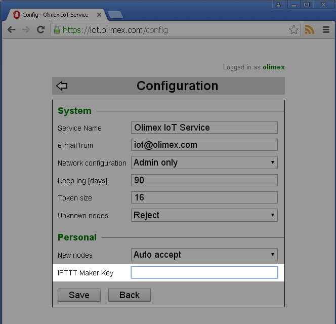
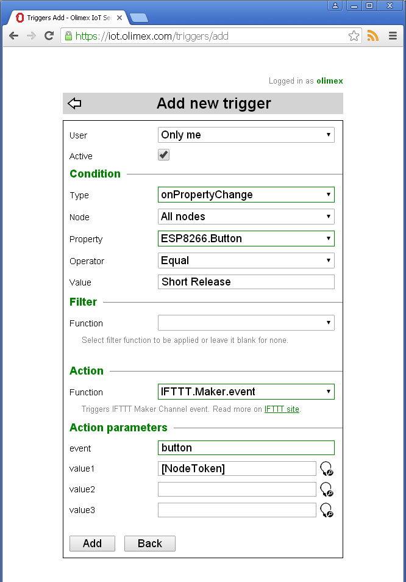

Back to OlimexIoT Help
Sending web request is done using Actions and Triggers. At the moment we have implemented (as an example) integration with IFTTT Maker channel.
First you should enter your IFTTT Maker Key in OlimexIoT configuration dialog.
Then you should create new trigger with action IFTTT.Maker.event
For example, the trigger bellow will send request for a button event to IFTTT site every time the button on IoT Device is pressed. The token of the node will be send as value1
Before sending web requests to OlimexIoT Server consider following
Make POST request to
https://<your-host-name>/clients/api-key/<api-key>with JSON body in format
{
"Action": "",
"Parameters": {
"name1": value1,
"name2": value2,
...
"nameN": valueN
}
}
If you want to switch your ESP_PLUG relay on using curl your request should look like
curl \
-H "Content-Type: application/json" \
-X POST \
-d '{"Action": "Relays.set", "Parameters": {"node": "ESP_PLUG", "state": 1}}' \
https://iot.olimex.com/clients/api-key/ABCDEFGHIJKLMNOPQRSTUVWXY1234567890abcdefghijklmnopqrstuvwxyz
And the response
{"Status":"OK"}
Back to OlimexIoT Help